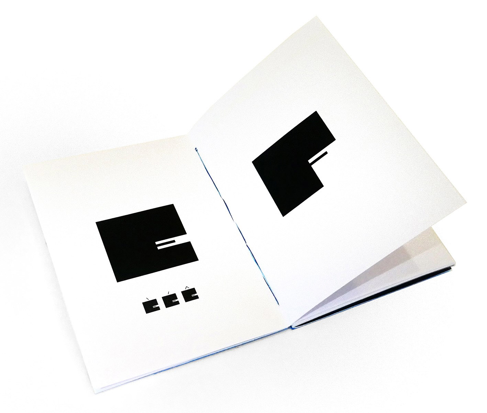
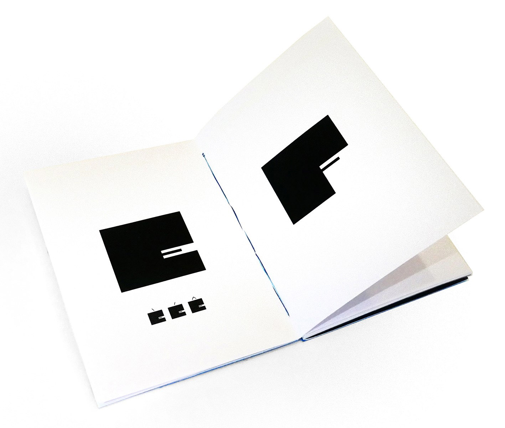
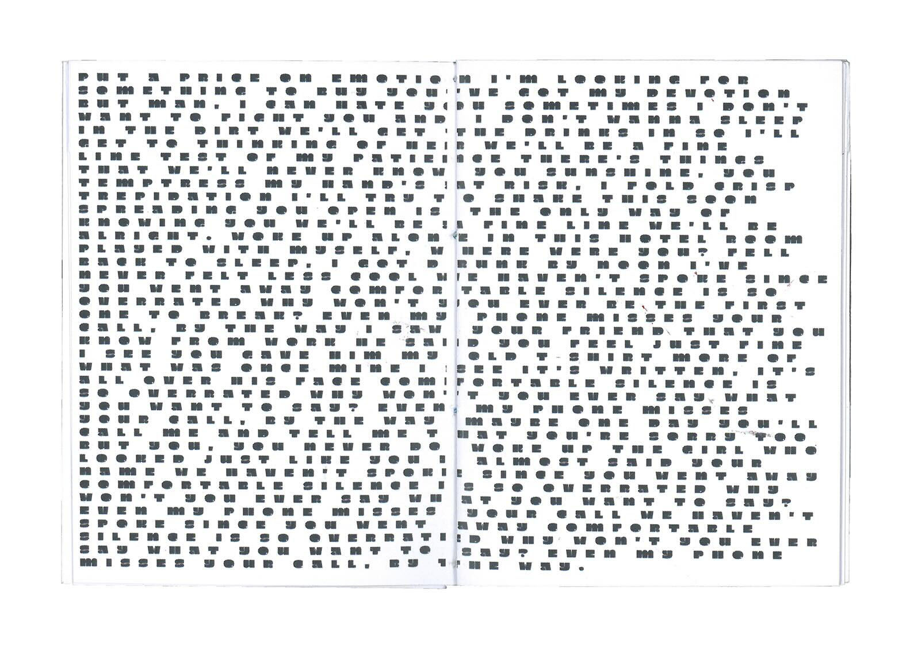
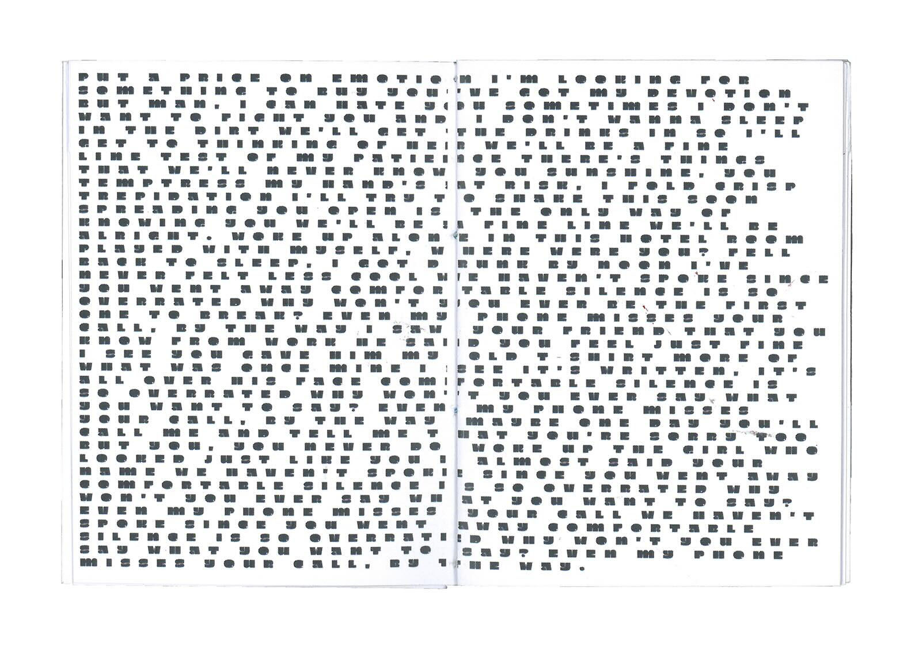
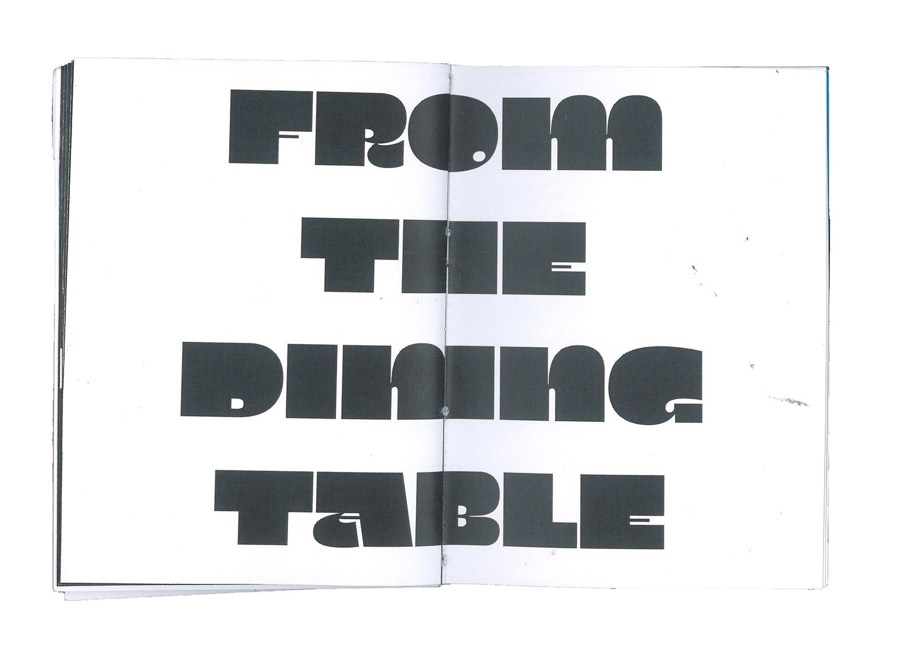
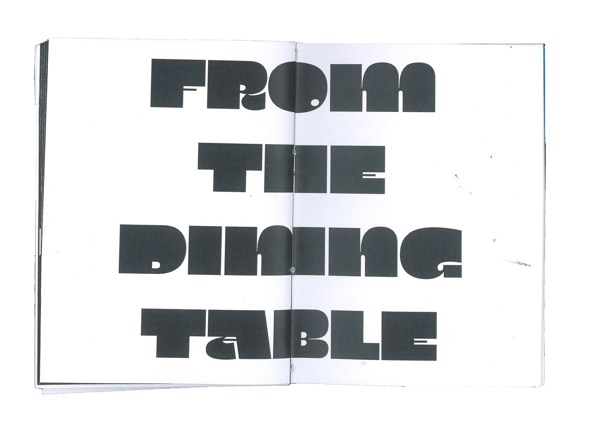

Specimen de la typographie Seamus de Ibrahim Kaçtıoğlu
Ce projet a pour but de présenter une typographie trouvée sur le site 205TF.
Description
J'ai voulu représenter cette typographie large sur un petit format (A7) pour qu'elle puisse facilement être distribuée, qu'elle rentre dans nos poches. Tous les textes de ce spécimen viennent des chansons Fine Line et From the dinning table de Harry Styles.
 



 



 
